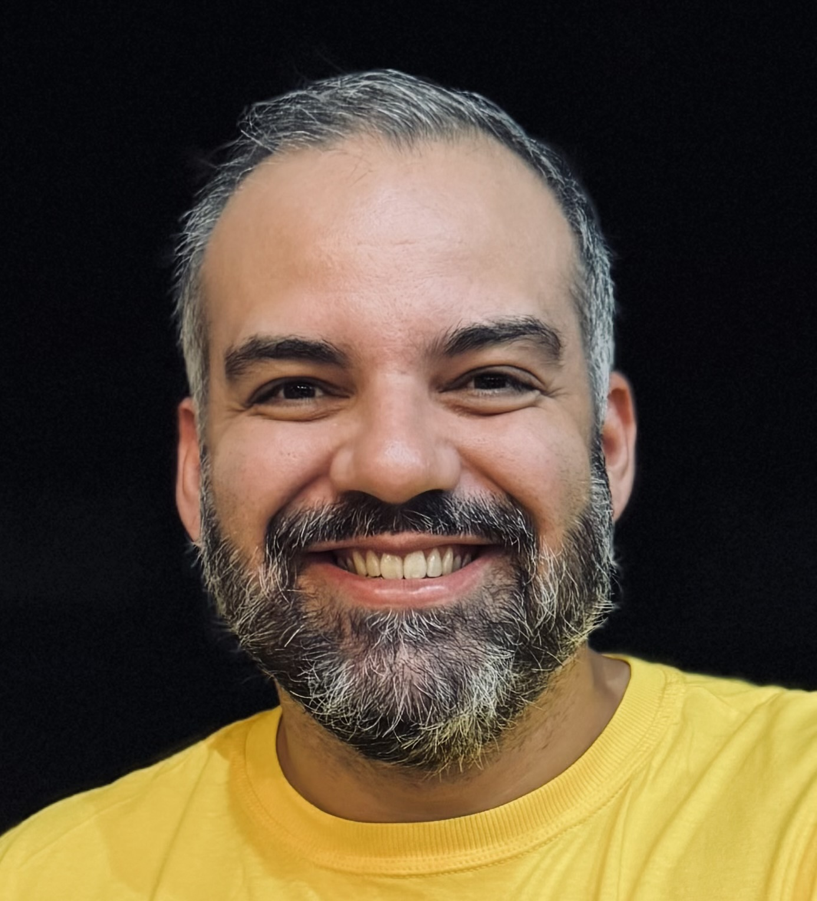
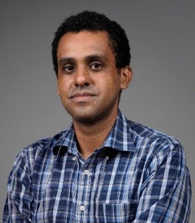
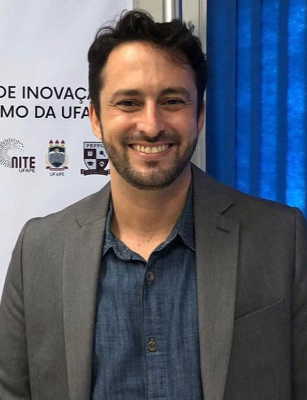
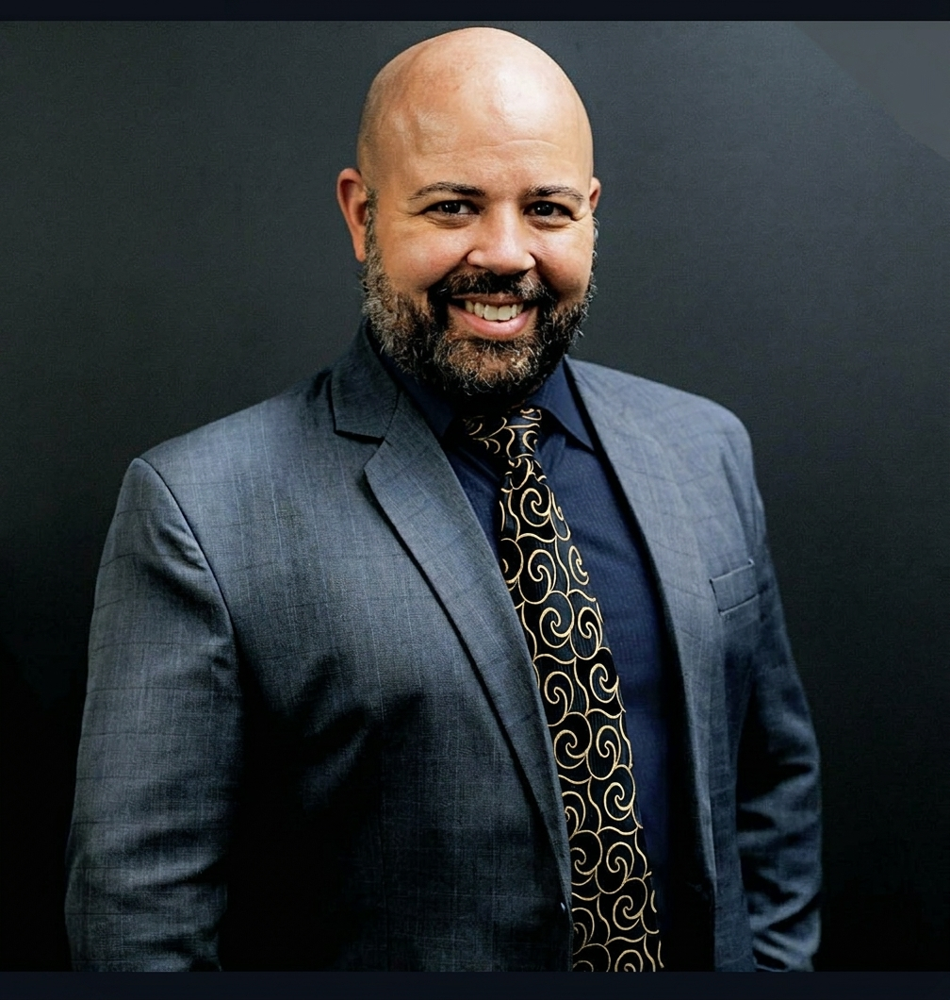
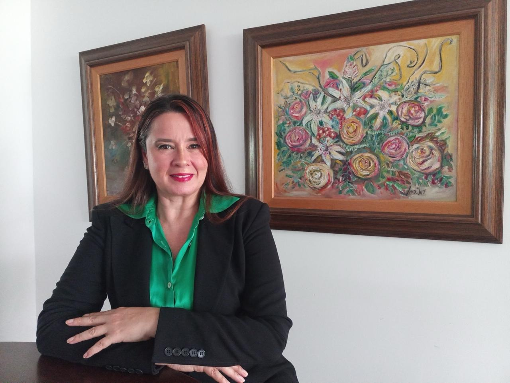
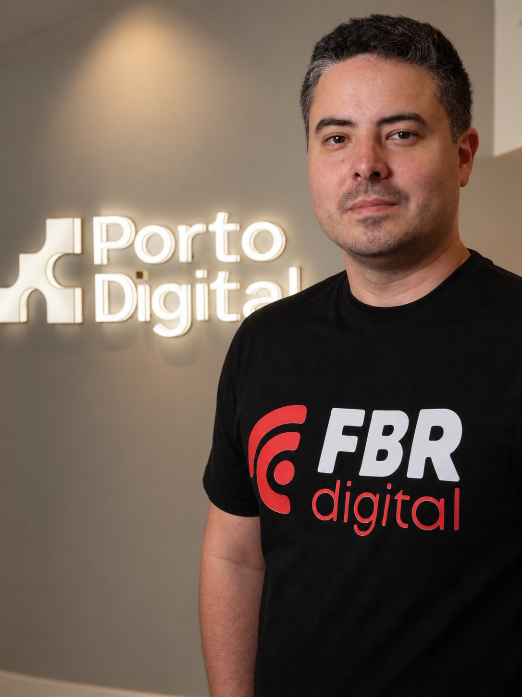
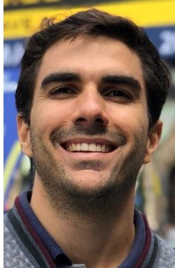
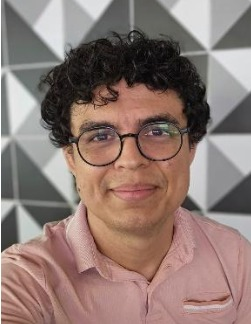
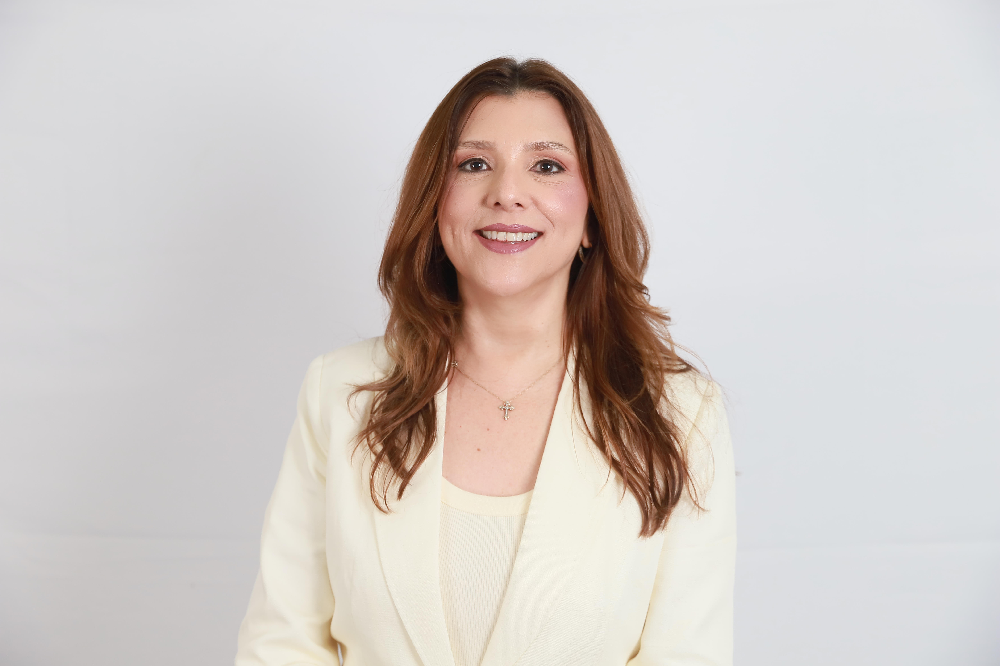
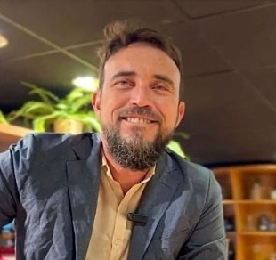

Participe do Festival REC'N'PLAY 2026
Garanta seu ingresso oficial para acessar todos os polos, palestras e as oficinas práticas da Trilha Espacial.
Programação Diária Completa
Programação oficial da Arena GO Recife Space Tech transcrita fielmente da planilha oficial.
| Horário | Local | Espaço | Atividade / Painel | Tema | Título |
|---|---|---|---|---|---|
| 9 às 12h 15 às 18 h |
ASSOCIAÇÃO COMERCIAL DE PERNAMBUCO - ACP | TERREO | Sala Terreo: Planetário (SAR) | Paineis de discussão sobre a conexão entre Recife, principal polo em transformação digital da américa latina e o setor espacial, com participantes locais, regionais e nacional. | Recife Space Tech: conexões para o futuro |
| 10 às 12 h | AUDITÓRIO TRF-5 | Auditório | Painel: O papel do jovem Recifense na revolução que envolve tecnologia digital, setor espacial e performance da cidade | Discussão sobre direito e diplomacia espacial | Direito e Diplomacia espacial |
| 10 às 12 h | ASSOCIAÇÃO COMERCIAL DE PERNAMBUCO - ACP | SALA 2: RODA DE CONVERSA 1º Andar | Viva Estácio Space Tech | Paineis de discussão sobre a conexão entre Recife, principal polo em transformação digital da américa latina e o setor espacial, com participantes locais, regionais e nacional. | Recife Space Tech: conexões para o futuro |
| 13h - 15h | SENAC 235 | Auditório SENAC (Prédio Senac Apolo, 235) | INOVA POLI - Inovação Aberta na Escola Politécnica da Universidade de Pernambuco. Professor responsável: Genésio Gomes | Oficineiros: UPE |
Desenvolver paineis, oficinas e atividades que tragam integrantes dos ecossistemas que fazem parte do programa RECIFE SPACE TECH. | A gente se vê amanhã: Recife Space Tech |
| 14 às 16 h | ASSOCIAÇÃO COMERCIAL DE PERNAMBUCO - ACP | SALA 1: PAINEL DE DEBATE 1º Andar | Painel: Resiliência urbana, tecnologia digital, dados satelitais e conectividade | Paineis de discussão sobre a conexão entre Recife, principal polo em transformação digital da américa latina e o setor espacial, com participantes locais, regionais e nacional. | Recife Space Tech: conexões para o futuro |
| 14 às 16 h | ASSOCIAÇÃO COMERCIAL DE PERNAMBUCO - ACP | SALA 2: RODA DE CONVERSA 1º Andar | FORAP | Paineis de discussão sobre a conexão entre Recife, principal polo em transformação digital da américa latina e o setor espacial, com participantes locais, regionais e nacional. | Recife Space Tech: conexões para o futuro |
| Horário | Local | Espaço | Atividade / Painel | Tema | Título |
|---|---|---|---|---|---|
| 9 às 12 horas | ESPAÇO 235 SENAC | Hall do SENAC 235 (Prédio Senac Apolo, 235) | Ideathon “O Pilar do futuro Recife” Oficineiros: Prefeitura Coreto |
Participação social, com um IdeaTom com a comunidade do Pilar, onde vamos levantar os principais desafios que a comunidade enfrenta, na visão dos moradores. | O Pilar do futuro |
| 9 às 12h 15 às 18 h |
ASSOCIAÇÃO COMERCIAL DE PERNAMBUCO - ACP | TERREO | Sala Terreo: Planetário (SAR) | Paineis de discussão sobre a conexão entre Recife, principal polo em transformação digital da américa latina e o setor espacial, com participantes locais, regionais e nacional. | Recife Space Tech: conexões para o futuro |
| 10 às 12 h | AUDITÓRIO TRF-5 | Auditório | Painel: A urgência do debate sobre direito e diplomacia espacial no Brasil | Discussão sobre direito e diplomacia espacial | Direito e Diplomacia espacial |
| Horário | Local | Espaço | Atividade / Painel | Tema | Título |
|---|---|---|---|---|---|
| 9 às 12h 15 às 18 h |
ASSOCIAÇÃO COMERCIAL DE PERNAMBUCO - ACP | TERREO | Sala Terreo: Planetário (SAR) | Paineis de discussão sobre a conexão entre Recife, principal polo em transformação digital da américa latina e o setor espacial, com participantes locais, regionais e nacional. | Recife Space Tech: conexões para o futuro |
| 10 às 12 h | AUDITÓRIO TRF-5 | Auditório | Painel: Transformação digital, Deep Tech e Inovação industrial como competências da cidade do Recife num olhar sistêmico de futuro. | Discussão sobre direito e diplomacia espacial | Direito e Diplomacia espacial |
| 10 às 12 h | ASSOCIAÇÃO COMERCIAL DE PERNAMBUCO - ACP | SALA 2: RODA DE CONVERSA 1º Andar | O Futuro da Educação e as Tecnologias do futuro | Paineis de discussão sobre a conexão entre Recife, principal polo em transformação digital da américa latina e o setor espacial, com participantes locais, regionais e nacional. | Recife Space Tech: conexões para o futuro |
| 13h - 15h | CARRETA SMART LAB | - | Oficina Interativa CubeSat: Monte e Controle um Satélite Oficineiros: UPE |
Desenvolver paineis, oficinas e atividades que tragam integrantes dos ecossistemas que fazem parte do programa RECIFE SPACE TECH. | A gente se vê amanhã: Recife Space Tech |
| 14 às 16 h | ASSOCIAÇÃO COMERCIAL DE PERNAMBUCO - ACP | SALA 1: PAINEL DE DEBATE 1º Andar | Painel: Desafios, perspectivas e oportunidades dos próximos 25 anos na interface entre transformação digital e serviços baseados em espaço | Paineis de discussão sobre a conexão entre Recife, principal polo em transformação digital da américa latina e o setor espacial, com participantes locais, regionais e nacional. | Recife Space Tech: conexões para o futuro |
| 14 às 16 h | ASSOCIAÇÃO COMERCIAL DE PERNAMBUCO - ACP | SALA 2: RODA DE CONVERSA 1º Andar | FORAP | Paineis de discussão sobre a conexão entre Recife, principal polo em transformação digital da américa latina e o setor espacial, com participantes locais, regionais e nacional. | Recife Space Tech: conexões para o futuro |
| Horário | Local | Espaço | Atividade / Painel | Tema | Título |
|---|---|---|---|---|---|
| 09h - 10h | CARRETA SMART LAB | - | DeltaV Drones – Escola Politécnica de Pernambuco (POLI/UPE) Professor responsável: George Azevedo | Oficineiros: UPE |
Desenvolver paineis, oficinas e atividades que tragam integrantes dos ecossistemas que fazem parte do programa RECIFE SPACE TECH. | A gente se vê amanhã: Recife Space Tech |
| 9 às 12h 15 às 18 h |
ASSOCIAÇÃO COMERCIAL DE PERNAMBUCO - ACP | TERREO | Sala Terreo: Planetário (SAR) | Paineis de discussão sobre a conexão entre Recife, principal polo em transformação digital da américa latina e o setor espacial, com participantes locais, regionais e nacional. | Recife Space Tech: conexões para o futuro |
| 10 às 12 h | ASSOCIAÇÃO COMERCIAL DE PERNAMBUCO - ACP | SALA 1: PAINEL DE DEBATE 1º Andar | Painel: Papel dos ecossistemas territoriais em tecnologias digitais para enfrentar os desafios no setor espacial | Paineis de discussão sobre a conexão entre Recife, principal polo em transformação digital da américa latina e o setor espacial, com participantes locais, regionais e nacional. | Recife Space Tech: conexões para o futuro |
Circuitos Contínuos (11 a 14 de Novembro)
Ciências, foguetes e imaginação
Tema: Atividade de entreterimento para conectar com o tema espacial
Programação:
- 11/11/2026 (QUA): Manhã e Tarde - Oficina de Lançamento Foguetes
- 12/11/2026 (QUI): Manhã e Tarde - Oficina de Lançamento Foguetes
- 13/11/2026 (SEX): Manhã e Tarde - Oficina de Lançamento Foguetes
- 14/11/2026 (SÁB): Manhã - Oficina de Lançamento Foguetes
Atividades de oficinas e extensão relacionadas à Astronomia
Espaço: Salas do Torre Malakof
Atividades:
- Observação astronômica com telescópios, máscaras solares e aplicativos para celular;
- Oficina de montagem e lançamento de foguetes educativos;
- Palestras temáticas sobre Astronomia e Ciências Espaciais;
- Representação teatral sobre episódios e personagens da Astronomia;
- Turismo Astronômico pelo observatório de Jorge Marcgrave (patrono da Astronomia de Pernambuco) e pela Torre Malakoff de Dom Pedro II (patrono da Astronomia no Brasil).
Participantes e Facilitadores
Especialistas e líderes institucionais presentes na trilha oficial da Arena GO Recife Space Tech.

José Roberto Ferreira Guerra
Diretor do Parque Tecnológico e Científico da UFPE e Professor do DCA e PPHTur/CCSA. Possui mais de uma década de experiência em inovação e coordenação de projetos voltados ao empreendedorismo tecnológico.

João Carlos Costa
Lidera projetos estratégicos phygital como Arena Go Recife e Recife Space Tech. Especialista em gestão pública e orquestração de ecossistemas inovadores, com formação executiva em Harvard e doutorando em Administração.

Dr. Rogério Pontes
Doutor em Engenharia Mecânica e Professor Associado da POLI/UPE e PPGES. Atua na gerência de CT&I da SECTI-PE, liderando projetos de Pesquisa, Desenvolvimento e Inovação voltados para a Indústria 4.0.

Dr. Thiago Carvalho
Mestre em Direito pela UFPE e Presidente da Comissão de Direito Aeronáutico e Espacial da OAB/PE. Fundador da Academia do Espaço, com destacada atuação jurídica e regulatória no setor aeroespacial.

Dra. Andréa Berenguer
Doutora em Ciências Jurídicas e Professora do IFPE com 30 anos de docência em Direito e Turismo. Coordenadora de extensão e colaboradora da política pública municipal Recife Space e do Ecossistema Oeste Inovador.

Ascânio José Morais de Melo França
Fundador e CEO da FBR Digital e sócio-fundador da Lumos Academy. Atua como 1º Vice-presidente da ACIC, Embaixador do Porto Digital, Membro do Advisory Board do NERD e Conselheiro do Tapioca Valley.

Prof. George Azevedo
Doutor em Engenharia da Computação e docente da POLI/UPE. Atua em controle de sistemas dinâmicos, robótica, visão computacional, inteligência artificial, sistemas embarcados e drones voltados a aplicações práticas da engenharia.

Prof. Vladimir Soares
Doutor em Engenharia Elétrica e Professor Assistente da POLI-UPE. Coordenador do LabTel e orientador da equipe de CubeSats DeltaV Satélites, pesquisando arquiteturas de comunicação para nanossatélites e sensores ópticos.

Adriana Rocha Coutinho
Advogada, professora de Direito Constitucional da Unicap e doutoranda em Cidadania Digital (PPGD-Unicap). Mestra em Direito pela PUC-SP, ex-vice-presidente da OAB-PE e ex-conselheira federal do CFOAB.

Prof. Genésio Gomes
Doutor em Ciência da Computação (CIn/UFPE), Professor de Empreendedorismo da UPE e coordenador do INOVA POLI/UPE. Fundador do Células Empreendedoras e investidor anjo com prêmios nacionais em inovação aberta.